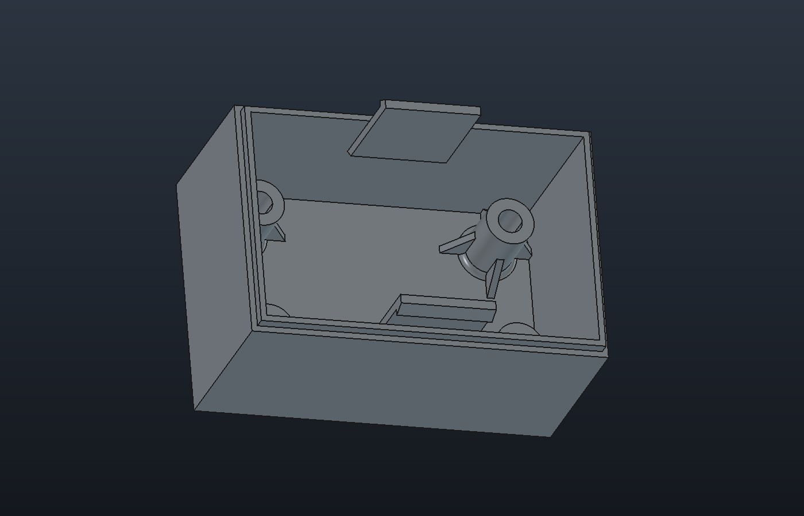
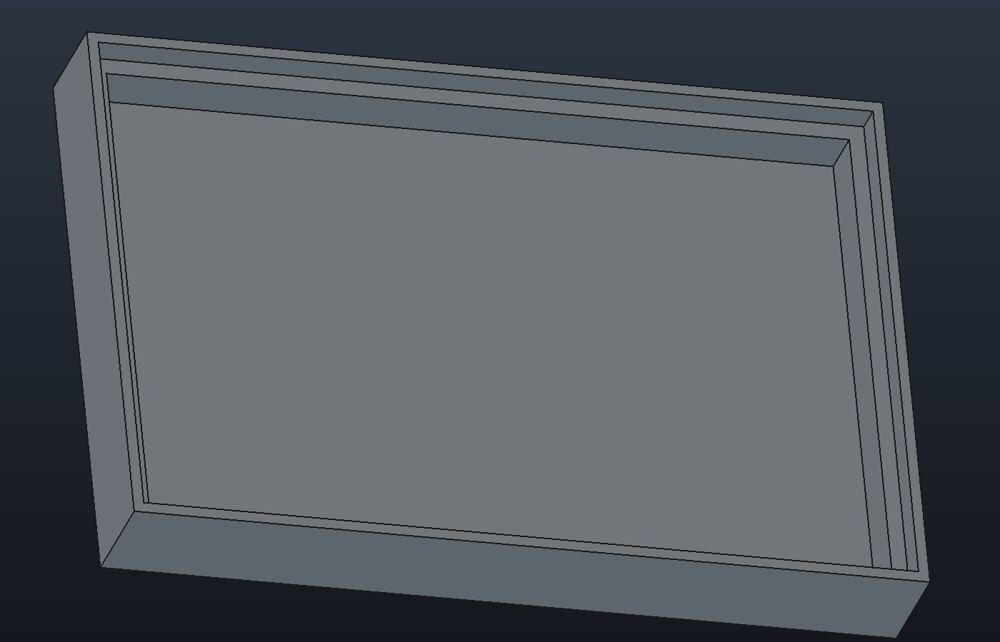
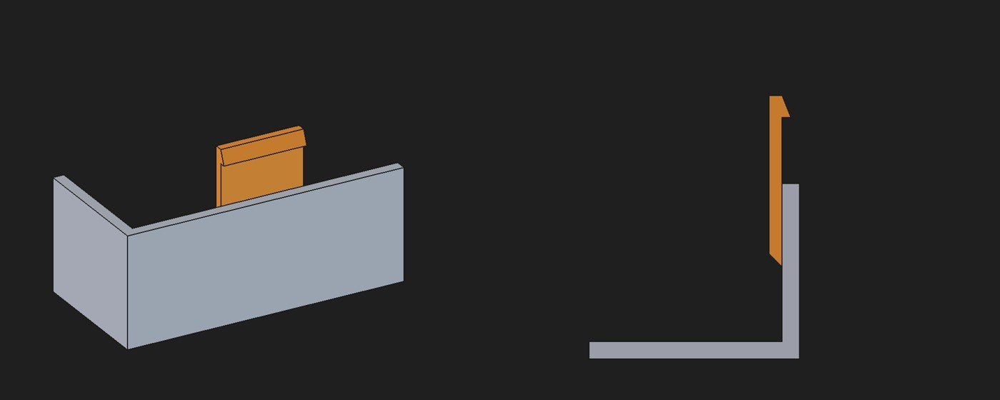

ProstoCAD gives FreeCAD the look and the working habits of Autodesk Inventor and Alibre Design.
ProstoCAD is a workbench for FreeCAD: a module that FreeCAD loads like its own Part Design or Sketcher workbenches. When ProstoCAD is active it replaces FreeCAD's toolbars and panels with an Inventor-style interface:
Everything ProstoCAD makes is ordinary FreeCAD geometry: a part is a FreeCAD Part Design body, a sketch is a Sketcher sketch, an assembly uses FreeCAD's own Assembly joints. Your files stay normal .FCStd files that FreeCAD opens with or without ProstoCAD.
The FreeCAD button at the top right of the window (Return to FreeCAD) brings FreeCAD's own interface back at any time; choose ProstoCAD in FreeCAD's workbench selector to come back.
A file that was not made in ProstoCAD opens as well, with every tool: when it comes to the front it becomes a ProstoCAD part by itself (its largest Solid is the main one; a STEP opened as it is gets a Solid for each of its shapes, where they are). Save keeps that.
0.16.0 is a test build. New in 0.16.0: much faster on big parts (sketch tools, feature dialogs, a Boolean with a clearance, painted faces); Edit Feature on a face and Edit on a Solid; Interference in a part; Project Geometry copies edges of another Solid; Esc stops long work; Space hides and shows. Assemblies came in 0.2.0, Move Face in 0.3.0, ProstoCAD's own sketch Offset and Concentric in 0.4.0, Text and Emboss in 0.5.0, STEP and STL export in 0.5.1. New in 0.5.2: big parts work much faster (recomputing, editing an early feature, clicking a face), and a slot or two arcs can be dimensioned by their outer edges (5.3). 0.5.3 makes Text and sketch patterns, deleting, every new or changed value (only the features that use it are rebuilt), the first change after opening a file and every feature preview faster, and adds ⚙ ▸ Show Log File. New in 0.5.4: Emboss on a sphere (6.16) and ⚙ ▸ Display Quality (3.8); in 0.5.5 Construction switches only the selected lines (5.7). New in 0.6.0: a Compact ribbon (View ▸ Ribbon Size: icons without names, the lowest ribbon), Work Plane ▸ Three points clicked on marked points as in Section; fixed: Offset and Symmetric on slots, Section on the XY / XZ / YZ plane. New in 0.7.0: Extrude ▸ To any face of any Solid, a curved one too, or any point; Emboss letters past the face run on round onto the faces that go on smoothly from it; End of Part above sketches, Texts and work planes; Full Round Fillet (two edges); Show / Hide All Sketches; a part goes see-through while you sketch on a plane inside it. New in 0.8.0: 3D Line drawn on a virtual cube of points (a path for Sweep, 6.18); several work planes in one go (Planes) and turned with rings (Turn); Extrude Extents 2 for the second side, and To an edge or a work axis; Full beside Fillet's radius; the Open window shows the file's picture; tips blue, errors red; an Image tab — a photo to sketch over, scaled by a known length; View ▸ Screenshot; the parts' axes in assemblies, to constrain to; fixed: a Sweep's wall stays even when the profile's sketch is flipped on its plane; a Sweep made away from the part no longer sends a dialog round and round. New in 0.9.0: Section in assemblies — every part the plane meets, each in its colour, also STEPs, other programs' files and FreeCAD's own assemblies (8.4); Interference: overlapping parts in bright red; Hide / Show of axes, origin and sketches in assemblies; Open a component's part in its own window (9.9). New in 0.14.0: thread profiles — Custom as a Triangle (its angle), a Trapezoid or a Semicircle, cut into the surface or grown onto it — the DIN threads named, Round (DIN 405) and Buttress (DIN 513) added, Save for the next part; a thread on a hole that runs out into a curved wall; Revolve ▸ New Solid; a start page with the recent files and their pictures; Return to Assembly when a part is edited from its assembly; the grounded part says Grounded; Split ▸ Make Assembly, and Split from a sketch in another (even empty) Solid; fixed: Extrude To from a sketch on a work plane joins the part; Split's Gap leaves no sliver at a bend. Fixed in 0.13.1: drawing in a sketch keeps up with the mouse; points are easier to catch on a Retina screen; a rectangle shows its diagonals while it is drawn and gets a centre point that goes onto an axis with one click each; Extrude ▸ Cut of a profile off the part cuts at once. New in 0.13.0: the new name — InCad is now ProstoCAD for FreeCAD (home page prostocad.com); nothing else changes. New in 0.12.0: Mirror Solid — a mirrored copy of a whole Solid that follows the original until Break Mirror Link, or Join / Cut into itself, of the whole Solid or one side of the plane (6.14); sketch Mirror whose copy follows its original without copying dimensions, and ProstoCAD's own Symmetric; Shift-click selects a sketch's whole outline; the Parameters window; Split ▸ Gap; ⚙ ▸ Report a Bug; right-click menus list only what applies; bigger, coloured gear handles; a Boolean whose clearance can't be made cuts with 0 mm. Fixed in 0.11.4: every plane of a row (Planes) opens its own dialog with a double-click — its offset and Turn — and a click on another plane of the row moves the dialog there; Point fields take a 3D Line's points and work points; Angle around edge and Normal to edge take an axis; Midpoint of edge lies halfway along a curve; Edge meets plane and Two edges meet refuse what does not meet; a 3D Line and a Text hide and show as sketches do. Fixed in 0.11.3: Appearance ▸ Hide Edges works after the Shaded button. New in 0.11.2: Hole ▸ Concentric and Thread on several round edges or faces at once (6.4, 6.10); Apply + keeps the settings; Delete asks to delete what is built on the feature. Fixed in 0.11.1: Work Axis ▸ Axis of a cylinder on a cone or part of a cylinder; every Point field of the work features lights the part's marked points; the view turns while points are picked; Hide / Show no longer rebuilds the part. New in 0.11.0: Spur Gears and Worm Gear — a pair of gears in mesh or a worm and its wheel in one dialog, turning together after Make Assembly (6.17). New in 0.10.0: Hide, Show and Show All said outright, in the ribbon and every right-click menu; in an assembly a part hides and shows in the assembly's tree (9.9); files made outside ProstoCAD — a script's, FreeCAD's, a STEP — open with every tool; Save of an assembly puts it and all its parts into a folder of its name (9.9); the assembly gizmo smaller, shown for a couple of seconds on a click; scroll arrows on the file tabs — CHANGES.txt has the full list.
Install ProstoCAD once with FreeCAD's Addon Manager; updating is the same few steps.
Intel Macs, Windows and Linux are not supported in this build.
…/InCad, not in
.zip and not in …-macOS-arm64.After the install the unzipped folder is no longer needed.
~/Library/Application Support/FreeCAD/v1-1/Mod. If there is no Mod folder, go to
…/FreeCAD/v1-1 and create a folder named Mod there.…/FreeCAD/v1-1/Mod/InCad/InitGui.py — not …/Mod/InCad/InCad/InitGui.py.The first time, ProstoCAD asks what to make and in which units: Part (one part file) or Assembly (place and constrain part files), and Millimeters (mm, ISO threads listed first) or Inches (in, UNC/UNF threads listed first). With Remember my choice checked, New makes the same kind of file without asking next time. Click Create.
To bring the question back, turn on Tools ▸ Options ▸ Ask on New on the ribbon, or choose ⚙ ▸ Units for New Files ▸ Ask every time.
To make ProstoCAD the workbench FreeCAD starts with: FreeCAD ▸ Settings… ▸ Workbenches ▸ Available Workbenches ▸ Startup ▸ Default workbench: ProstoCAD. (In FreeCAD 1.1 this setting is under Workbenches, not under General.)
Installed by hand: quit FreeCAD, replace the Mod/InCad folder, start FreeCAD.
Tools ▸ Addon Manager ▸ select ProstoCAD ▸ Uninstall, then restart
FreeCAD. Installed by hand: quit FreeCAD and delete the Mod/InCad folder. You may also delete the log file
~/Library/Logs/InCad.log. Your .FCStd files keep working in plain FreeCAD.
A short tour: what each area of the window is for.
The strip at the very top holds quick buttons — New, Open, Save, Undo, Redo and Update — the name of the file, and on the right Light / Dark, FreeCAD (Return to FreeCAD) and ⚙ (ProstoCAD settings).
Update recomputes the model and redraws the browser and the view. Use it if the view and the browser ever seem out of step with the model; in an assembly it also brings in parts that changed (see 9.10).
ProstoCAD keeps a short menu bar: File (New, New Assembly, Open, Save, Save As, Close, Quit), Edit (Undo, Redo) and View (Light / Dark, Zoom All, Home View, Shaded, Wireframe, Assembly Context, Parameters, Return to FreeCAD, Ribbon Size). Everything else is on the ribbon and in the marking menus.
The ribbon's tabs depend on what is open:
| Mode | Tabs |
|---|---|
| No file, or a file not made in ProstoCAD | Get Started (New, New Assembly, Open), View |
| A part | 3D Model, Inspect, Tools, View |
| Editing a sketch | Sketch, View |
| An assembly | Assemble, View |
A button with a small arrow is a split button: it runs the command shown, and its arrow lists the variants (for example Rectangle ▸ Center Rectangle, 3-Point Rectangle …). Hover over a button for its full name and a tip. View ▸ Ribbon Size (or ⚙ ▸ Ribbon Size) switches between Compact (icons without names, which are in the tooltips: the lowest ribbon), Small and Large. Appendix B lists every command of every tab.
The MODEL panel on the left is the history of the part, as in Inventor:

Click a row to select it: the faces the feature made light up in the view (figure 2). A hidden plane, axis, point or sketch is shown while its row is selected and hidden again when you select something else. Double-click a row to edit it: a feature opens its dialog, a sketch opens for editing, an origin plane starts a new sketch on it, a work plane opens its dialog. With ⇧ or ⌘ you can select several rows.
Right-click a row for its marking menu (chapter 4):
| Row | Commands |
|---|---|
| A feature or sketch | Edit, Move End of Part Here, Suppress / Unsuppress, Rename, Show in Window, Start 2D Sketch, Delete, Hide / Show |
| A solid (Solid Bodies) | Hide / Show, Rename, Show in Window, Delete |
| An origin plane or axis | Start 2D Sketch, Hide / Show |

Below the browser, PARAMETERS lists the part's values in three columns: Name, Value (what you typed — a number or a formula) and Result.
Width, 40 mm). Use the name in any value box or dialog field.View ▸ Windows ▸ Parameters (or the marking menu) opens the Parameters window: every parameter in one big table you can resize — Name, Value, Result and Used by (the features, sketches and formulas that use it; «— not used» in grey). It stays open while you work and follows every change. Type a value or a formula in Value, type a new name over a dimension or a feature value to rename it, + Add and − Remove as in the panel, Find a name narrows the list, and Delete Unused removes every value nothing uses (values left behind by deleted features) in one undo step.
Wherever ProstoCAD asks for a length or an angle you can type:
12), or with units (12 mm, 0.5 in,
30°);d3, Width);d0/2, Width - 2*d3, d3*2).A value that is a formula updates whenever the values it uses change.
At the bottom of the window: on the left, what to do next (for example "Pick a plane or a flat face for the new sketch") and messages — in orange or red when something did not work, so look here first when "nothing happens". On the right: the units of the file (mm · deg), while sketching the sketch's freedom (DOF: 3 or Fully constrained ✓ — click it to see the free geometry), and the size of the part (2 solids · 14 features).
Light / Dark on the title strip (also View ▸ Appearance and the marking menu) switches the theme in one click. The ⚙ menu holds ProstoCAD's settings:
| ⚙ menu | Choices |
|---|---|
| Theme | Match macOS, Light, Dark |
| Ribbon Size | Compact, Small, Large |
| Units for New Files | Ask every time, Always millimeters, Always inches |
| Dimension Display | How sketch dimensions are labelled: Value (40), Name (d3), Expression (d3 = 40) |
| Rectangle Diagonals | On: a new rectangle keeps its two diagonals as construction lines (off: only the centre point). |
| Display Quality | Normal (faster) or Fine (smoother curves): how finely round faces are drawn. Fine keeps a highlight on a ball or a fillet free of facets; it changes only the drawing, never the part, and does not mark a file as changed. Fine by default on a Mac. |
| Show Log File | Shows ProstoCAD's log (InCad.log) selected in the Finder — the file to send with a problem report (chapter 11) |
| Report a Bug… | Sends a problem report straight to the public issue list of ProstoCAD on GitHub — no GitHub account needed: what happened, the steps, a contact if you want an answer, and the end of the log (your name is taken out of the file paths). The answer comes there (chapter 11) |
| Check for Updates… | Asks GitHub for the newest release. When there is one, Download puts the file for your system into Downloads (a Mac disk image opens by itself; a ZIP is shown in its folder); install it when you are ready. What's New opens the release page. Check for Updates at Start (on) looks once a day by itself and says something only when a newer release is out (Skip This Version stops it for that one). |
| Mouse Navigation | On: ProstoCAD's mouse (LMB+RMB orbit, right-click menu). Off: FreeCAD's own navigation style applies. |
⌘ Z undoes, ⇧ ⌘ Z redoes (also the title strip buttons and the NW / NE slots of the marking menu). Every operation is one undo step: a feature made in a dialog, a delete with its helpers, a hide, a drag of an assembly part. Inside a feature dialog, Undo steps back through the dialog's own changes. Undo also works in a sketch.
While a feature dialog is open, commands that would interfere with it (Save, Undo outside the dialog, editing a sketch) are refused with "Finish the … dialog first". Click OK or Cancel first.
New (⌘ N) makes a part or an assembly (as chosen at the first start), File ▸ New Assembly always an assembly. Open (⌘ O), Save (⌘ S), Save As (⇧ ⌘ S) work on the file in front. Close (⌘ W) asks whether to save changes (Save, Don't Save, Cancel); Quit (⌘ Q) asks about every changed file. Each open file has its own tab above the view. The Open window (and Import, Place) shows a picture of the file under the pointer — the view a FreeCAD file was saved with, an STL, STEP or IGES drawn shaded (a STEP over 40 MB is not read) — with its date and size.
Open lists FreeCAD files, STEP and STL only. A JPG, PNG or BMP to sketch over: Image ▸ Insert Image (6.19). View ▸ Capture ▸ Screenshot (also File ▸ Screenshot) saves the 3D view as PNG, JPEG or BMP at the screen's full resolution (twice the window's size on a Retina screen); a PNG can have a transparent background, for a web page. Screenshot (Window) (the arrow beside it) saves the whole window — ribbon, browser, 3D view and status bar.
ProstoCAD uses Inventor's mouse: the left button selects, both buttons orbit, the right button opens marking menus.
| Action | What it does |
|---|---|
| Left click | Select. ⇧-click or ⌘-click adds to the selection. |
| Left + right button drag | Orbit around the point under the cursor. |
| Middle button drag | Pan. |
| Wheel | Zoom at the cursor. |
| Right click | Marking menu (in the view and in the Model Browser). |
| Right button drag | Flick: runs the marking-menu command in that direction without waiting for the menu. |
| Double click | In the browser: edit the row (a feature, a sketch, an assembly part). In a sketch: edit a dimension, or the pattern of a copy. |
No middle button? Orbit and Pan on the navigation strip (right edge of the view) or on the View tab turn the left button into orbit or pan; click the button again to stop.
⚙ ▸ Mouse Navigation switches ProstoCAD's mouse handling off; FreeCAD's own navigation style then applies.

A right click opens a ring of eight commands around the cursor (north, north-east … north-west) and a short list below it. What it offers depends on what is under the cursor — empty space, a face, an edge, a sketch, an assembly part, a browser row. Once you know where a command sits, flick: press the right button, drag towards the command and release — no need to wait for the menu. The list shows only what applies there: Hide on something shown, Show on something hidden, Show All only when something is hidden, Thread only on a round face, Make Assembly only with two Solids or more, the draw style you are not in; the ring keeps its places.
| Under the cursor | Ring (N, S, E, W first) | List |
|---|---|---|
| Empty space (part) | N Start 2D Sketch, S Extrude, E Shaded, W Wireframe, NW Undo, NE Redo, SE Parameters, SW Light / Dark | Zoom All, Home View, Return to FreeCAD, Hide / Show, Show All Origin, Hide All Origin, Make Assembly, Move Face |
| A face | N Start 2D Sketch, S Extrude, E Shaded, W Wireframe, NW Undo, NE Look At, SE Home View, SW Zoom All | Show in Browser, Zoom Selection, Hole, Fillet, Move Face, Thread, Hide / Show |
| An edge | N Look At, S Zoom Selection, E Fillet, W Chamfer, NW Undo, NE Redo, SE Home View, SW Zoom All | Show in Browser, Shaded, Wireframe, Hide / Show |
| In a sketch | N Finish Sketch, S Dimension, E Circle, W Undo, NE Line, SE Rectangle, SW 3-Point Arc, NW Trim | only what applies: Delete for whatever is selected — lines, points and dimensions (a right-click on something not selected selects it first); on a line or point Construction, Show / Hide Constraints and its Constraints (n)… (the Constraint List filtered to it: delete one or all there, section 5.6); Edit / Delete Pattern on a pattern's geometry, Break Mirror Link on a mirrored copy; on empty space Show / Hide Constraints and the Constraint List; Stop Tool first while a tool runs |
| Empty space (assembly) | N Place, S Mate, E Rigid, W Create, NW Undo, NE Zoom All, SE Home View, SW Ground | Edit, Hide / Show, Suppress, Remove from Assembly, Flush, Insert, Return to FreeCAD |
| A face of a part (assembly) | N Mate, S Flush, E Angle, W Tangent, NE Look At, SW Ground | Edit, Hide / Show, Suppress, Remove from Assembly, Rigid, Parallel, Perpendicular, Zoom Selection |
| An edge of a part (assembly) | N Insert, S Rotational, E Cylindrical, W Slider, SW Ground | Edit, Hide / Show, Suppress, Remove from Assembly, Rigid, Parallel, Perpendicular, Angle, Zoom Selection |
| No file open | N New, S Open, E Light / Dark, W Return to FreeCAD | — |
Edit Feature. On a face or an edge, the list has Edit Feature: it opens the dialog of the feature that made that face. Space hides or shows what is selected, in the browser and in the view.
The browser rows have their own menus (chapter 3; assembly rows in chapter 9).
On the View tab (and partly on the navigation strip and the View menu):
| Command | What it does |
|---|---|
| Light / Dark | Switch the theme. |
| Zoom All | Fit the whole model in the view. |
| Home View | The standard isometric view. |
| Look At | Look straight at the selected face or plane; while sketching with nothing selected, straight at the sketch. |
| Zoom Selection | Fit the selection in the view. |
| Orbit, Pan | The left button orbits or pans until you click the button again. |
| Shaded, Wireframe | Visual style. Wireframe lines are drawn light in the dark theme and dark in the light theme. |
| Section | Cut the view open (section 8.4). Click again to close. |
| Section by 3 Points | Click three marked points for the section plane. |
| Hide / Show | Hide or show the selected solids, assembly parts, origin items or sketches. |
| Show All / Hide All | Show All Origin, Hide All Origin: every origin plane, axis and the centre point. Show All Sketches, Hide All Sketches: every sketch and Text of the part, the ones its features use too. |
| Assembly Context | In a part opened from an assembly: show or hide the other parts around it (9.9). |
| Degrees of Freedom | In an assembly: draw the DOF symbols on every free part (9.7). |
| Parameters | Open the Parameters window: every parameter, what uses it, Delete Unused (3.5). |
Sketches work as in Inventor: draw roughly, then dimension and constrain. Every dimension has a name you can use in formulas.
Double-clicking an origin plane in the browser also starts a sketch on it (on a work plane: right-click ▸ New Sketch). To edit an existing sketch, double-click it in the browser (or right-click ▸ Edit).

To leave the sketch: Sketch ▸ Exit ▸ Finish Sketch, N in the marking menu, or Esc (the first Esc stops a running tool).
All on Sketch ▸ Create. The tools are FreeCAD's Sketcher tools; split buttons hold the variants.
| Button | Variants | Key |
|---|---|---|
| Line | Line (a chain of lines; M while drawing switches between line and arc), Single Line | L |
| Spline | Spline (through points), Control-Vertex Spline | |
| Circle | Circle (centre, radius), 3-Point Circle, Tangent Circle (select two or three lines, arcs or circles first: three fix it, with two give it a radius), Ellipse, 3-Point Ellipse | C |
| Arc | 3-Point Arc, Center Arc, Elliptical Arc | A |
| Rectangle | Rectangle (corner, width, height), Center Rectangle, 3-Point Rectangle, 3-Point Center Rect., Rounded Rectangle. While a rectangle is drawn, its two diagonals show dashed, for orientation; the finished rectangle gets a construction point in its middle (a Center Rectangle has its own): one constraint — that point on the origin — centres the rectangle. The point follows the rectangle and can be deleted like any point. | R |
| Slot | Center-to-Center Slot, Overall Slot (the two outer ends, then the width), Center Point Slot (the centre, one end's centre, then the width), Arc Slot, Flat-End Arc Slot | |
| Polygon | Hexagon, Triangle, Square, Pentagon, Octagon, Polygon (N sides) | |
| Point | A sketch point (hole centres, for example) |
Sketch ▸ Modify: Fillet and Chamfer (sketch corners), Trim (X), Extend, Offset. Sketch ▸ Pattern has the sketch patterns (5.9) and Mirror.
Offset (ProstoCAD's own): click a line — the whole shape it belongs to is taken (a rectangle, a polygon, a chain drawn line by line); ⌘-click adds more shapes. The copy follows the pointer; a click places it. Corners stay sharp, a single line gives one parallel line, a circle or an ellipse gives a ring. One dimension drives the offset and the value box opens on it. Geometry selected before the command is taken at once. Mirror and the patterns also take the whole shape from a click on one side.
Whole shapes. ⇧-click a line to select its whole chain or shape at once (it shows selected); ⇧-click another to add it. A plain click still selects one line.
Mirror. Select the shapes (a click on one side takes its whole outline, which shows selected), click Mirror, then click the mirror line — any line, also one of the shape's own (a half profile mirrored about its closing line joins up), the X or Y axis — or a point. With the mirror line already selected last, the copy is made at once. The copy is held to the original by symmetry alone: it keeps the original's size and follows every change of it, and no dimension is copied. Right-click the copy ▸ Break Mirror Link frees it: it keeps its shape (its corners stay joined) and no longer follows the original.
Typing values while drawing. While a tool draws, type the length, radius or angle directly; Tab moves to the next field. Esc or Stop Tool (marking menu) ends the tool.
Delete geometry or dimensions: select them and press ⌫ or Del.
Double-click a dimension to change it later. Every dimension gets a name (d0, d1 …) and appears in the
Parameters panel, where you can rename it (Width) — see 3.5.
Formulas. In the value box, click another dimension in the sketch or a parameter in the Parameters panel to
insert its name: d0/2, Width - 2*d3. A formula may use other dimensions and parameters, but
not a reference (driven) dimension of the same sketch.
A slot's length, or the distance between two arcs or circles. It can be measured three ways, and the value box of such a dimension shows three buttons to choose: Centers (centre to centre), Overall (outer edge to outer edge — a slot's overall length) and Gap (inner edge to inner edge — what FreeCAD's Dimension gives when you click two arcs). A click switches the dimension at once; it keeps its name and the box opens on its new value. Sketch ▸ Dimension ▸ Overall Dimension makes the overall one directly: click one edge of a slot (or two arcs or circles) and type the value. A new overall value makes the slot longer, not wider. If the slot's length is already fixed by other dimensions, the new dimension is a reference (driven) one that follows. A dimension used in a formula keeps its kind.
⚙ ▸ Dimension Display chooses how dimensions are labelled: the value (40), the name (d3) or both (d3 = 40).
Sketch ▸ Constrain: Coincident, Concentric (two circles, arcs or ellipses: their centres are tied), Horizontal, Vertical, Parallel, Perpendicular, Tangent, Equal, Symmetric, Fix and List (the Constraint List, 5.5). Select the geometry, then click the constraint (or click the constraint, then the geometry).
Symmetric takes whole pieces, not only points: click two points, two lines (their ends are paired up) or two circles / arcs (their centres, and equal radii), then the mirror line — any line, the X or Y axis — or a point. A click near an end or a centre takes that point, otherwise the line under the pointer; dimensions are never caught. What you picked shows selected. Once the pair is made the tool ends, so you can drag the pair at once (it moves as a mirror image); click Symmetric again for another pair. Esc cancels a pick.
The status line shows the sketch's degrees of freedom — DOF: 3, or Fully constrained ✓. Click it, or Sketch ▸ Format ▸ Show Free Geometry, to select the geometry that can still move.
Sketch ▸ Format ▸ Show / Hide Constraints hides or shows the constraint symbols (dimensions stay); F8 shows them, F9 hides them.

Open it with Sketch ▸ Constrain ▸ List, or right-click in the sketch ▸ Constraint List. It lists every constraint of the sketch with what it ties and its value — including the ones that have no symbol to click, such as coincident points and a point on a line.
Right-click a line or a point in the sketch: the marking menu's list then has a Delete … entry for each of its constraints (for example Delete Horizontal, or Delete Distance (Line 2) d4 = 20 mm), Delete all constraints (n), and Constraints…, which opens the Constraint List for that element.
Sketch ▸ Insert ▸ Project Geometry brings edges and points of the part into the sketch. As in Inventor, projected edges are normal lines, ready to be part of a profile. They follow the part when it changes.
An edge or a face of another Solid (a lid, when you sketch on its jar) can't be linked: FreeCAD links only the sketch's own Solid. Project Geometry then copies it into the sketch as plain lines; they don't follow that Solid when it changes.
Sketch ▸ Format ▸ Construction works two ways:
Construction geometry does not take part in profiles; use it for axes and helper lines. It is drawn orange and dashed, thinner than the normal lines — a projected edge switched to construction too.
Sketch ▸ Pattern repeats sketch geometry. The copies are real sketch geometry, tied to the original: change the original and the copies follow.
Edit Pattern: double-click a copy, or select a copy and right-click ▸ Edit Pattern. Delete Pattern (right-click on a copy) removes the copies; the original stays. If you delete single copies, the pattern is rebuilt the next time you edit it.
| Field | Meaning |
|---|---|
| Geometry | The lines, arcs, circles and points to repeat. |
| Distribution | By spacing (a direction, a count and a spacing) or Equal spacing (a count spread evenly between two limits). |
| Direction 1, Flip direction | A line of the sketch, or the X or Y axis. |
| Count, Spacing | How many (2), how far apart (10 mm). |
| From, To | Equal spacing: the limits — a line or a point. |
| Two directions | By spacing: a second direction with Direction 2, Count 2 and Spacing 2. |
| Field | Meaning |
|---|---|
| Geometry | What to repeat. |
| Axis | The centre point (any point of the sketch, a projected point or the origin). |
| Count, Angle | How many (4) over which angle (360°). |
| Distribution | Fitted (the copies fill the angle) or Between copies (the angle is the step from one copy to the next). |
| Flip | The other way round. |
| Field | Meaning |
|---|---|
| Geometry | What to repeat. |
| Path | The path's lines, arcs and splines, in order. |
| Count | How many (3). |
| Distribution | By spacing (with Spacing, measured along the path) or Fit to path. |
| Orientation | Identical (every copy as the original) or Follow path (turned with the path). |
| Flip | Go along the path the other way. |
Sketch ▸ Create ▸ Text writes words in the sketch; Extrude raises them (Join) or engraves them (Cut), Emboss wraps them round a cylinder or a cone, or projects them onto a sphere (6.16).
| Field | Choices and meaning |
|---|---|
| Text | The words; Return starts a new line. Cyrillic works. |
| Font, Bold, Italic | The Mac's installed fonts; Bold / Italic use the font's own Bold and Italic files. |
| Mirror | Flips the text left-right, to read it from the plane's other side (a sketch on the underside of a part, or on a plane turned the other way). |
| Size | The height of the capital letters (5 mm), a named value like any other (3.6). |
| Placement | In a box or Along a curve. |
| Box | The box the text sits in: the one drawn by the two clicks, or a line of any rectangle of the sketch. Dimension or constrain the box (centred on a face, 3 mm from an edge) and the text follows; a tilted box tilts the text. |
| Horizontal, Vertical | Left / Centre / Right and Top / Middle / Bottom in the box, by the letters themselves. A text longer than the box runs past it. |
| Fit to the box | The letters scaled so the widest line fills the box's width (never taller than the box); Size then hides. |
| Curve, Position, Shift, Distance, Flip side | Along a curve: any line, arc, circle, ellipse or spline of the sketch (construction too). Select it before pressing Text and the text runs along it — each letter turned with it, Centre at a closed curve's top, Shift moves it along, Distance lifts it off, Flip side puts it on the other side (inside a ring it then reads at the bottom, as on a coin). |
| Letter spacing | Extra space between letters (0 mm). |
The text is one object (a Text row in the browser): double-click it to change the words or the font — its sketch opens with the dialog. While the sketch is open the text follows its box or curve at once, and its outline is drawn on top. A Text that an Extrude or Emboss uses is hidden and shows under that feature.
Every feature opens a dialog with a live preview. This chapter first explains how the dialogs work, then each feature with what to pick and what each option means.

Esc stops long work. A long recompute stops between features when you press Esc (the rest is computed on the next recompute); so does the Emboss check. One kernel operation (a single Boolean, offset or fillet) still runs to its end.
3D Model ▸ Create ▸ Extrude. Pulls a closed sketch profile into a solid, or cuts with it.
| Field | Choices and meaning |
|---|---|
| Operation | Join (add material), Cut (remove), Intersect (keep only what the extrusion and the part share), New Solid (a separate solid, chapter 7). Cut is chosen for you when the sketch lies on or inside the material, Join otherwise. |
| Extents | Distance; To Next (up to the next face of the part — if nothing is in the chosen direction, it goes toward the part); Through All; To (up to what you pick: a face of any Solid, flat or curved, a work or origin plane, or a point — a corner, a sketch or work point: it stops on the plane through it parallel to the sketch — an edge or a work axis, through its middle — and it follows when that moves). |
| Distance | The length (10 mm). |
| Direction | → the default side, ← the other side, ⇆ symmetric (half each way), ⇄ 2 two sides, the second with its own Extents 2: Distance (Distance 2, 5 mm), To Next, Through All or To (To 2). |
| Taper | Draft angle of the sides (0°). |
A Join that does not touch the part becomes a solid of its own; the status line says so. Join and Cut can be switched later in the dialog, unless other features are built on this Extrude.
3D Model ▸ Create ▸ Revolve. Turns a sketch profile around an axis.
| Field | Choices and meaning |
|---|---|
| Operation | Join or Cut. |
| Axis |
Sketch vertical or Sketch horizontal — the sketch's own axes. Construction / projected line — a construction line of the sketch or a projected straight edge, chosen in the Line list. If the sketch has exactly one such line, it is chosen for you. To revolve around an edge of the part, project that edge into the sketch (an edge perpendicular to the sketch projects to a point and is not offered). Line, axis or edge — Pick a sketch line, an origin or work axis, or a straight edge in the view. Two points — click two Points on the part: corners, edge middles, circle centres. They are projected onto the profile's plane, so the axis always lies in that plane. |
| Extents | Full (360°), Angle (with Flip for the other way), Two angles (Angle and Angle 2, one each way). Angles start at 90°. |
For a projected line or two points, ProstoCAD keeps a hidden Revolve axis under the feature; it is deleted with the feature.
3D Model ▸ Create ▸ Hole. Drilled, counterbored, countersunk and threaded holes.

| Field | Choices and meaning |
|---|---|
| Placement | From Sketch: a hole at every point and circle centre of the picked Sketch. Concentric: click round edges or round faces (Round; several at once — a hole at the centre of each); the holes start on the flat face beside them, or on the Face you pick. |
| Hole | Simple (a Diameter, 5 mm), Clearance (for a screw: Standard, Size and Fit — Close, Normal, Loose), Tapped (a modeled thread), Insert (for a heat-set threaded insert: pick its size, M2–M5; the hole has the size the insert needs, a flat bottom and is 1 mm deeper than the insert). |
| Standard | Clearance and Tapped: ISO metric, ISO metric fine, UNC, UNF, UNEF, NPT, G / BSP, BSW, BSF. |
| Size | The thread size, or Auto (from Diameter). |
| Seat | None (drilled), Counterbore (C'bore Ø 10 mm, C'bore depth 3 mm), Countersink (C'sink Ø 10 mm, C'sink angle 90°), Spotface (Spotface Ø 10 mm, Spotface depth 0.5 mm). |
| Termination | Distance (a Depth, 10 mm), Through All (the default), To (up to To face, a face or work plane). |
| Drill point | For Distance and To: Flat or Angle (Point angle 118°). |
| Thread | Tapped: Whole hole or Depth (Thread depth, 8 mm). |
| Print clearance (on diameter) | Tapped: how much larger the thread is made so that a printed part fits (0.2 mm, measured on the diameter). |
| Direction | Tapped: Right hand or Left hand. |
| Flip direction | Drill the other way. |
| Chamfer | None, Start, Both ends, with a Chamfer size (0.5 mm): a 45° lead-in at the mouth and, for a through hole, at the exit. A tapped hole is chamfered from the thread's diameter, so a screw starts easily. With a seat only the exit can be chamfered (Start is greyed out). |
3D Model ▸ Modify ▸ Fillet / Chamfer (a split button). Select the edges, then the command — or pick the edges in the dialog. Also on the marking menu of an edge (E Fillet, W Chamfer).
| Feature | Fields |
|---|---|
| Fillet | Edges, Radius (1 mm). Full (beside the radius arrows): a full round between the two picked parallel edges instead — the face between them becomes a half cylinder (the radius is greyed); off again, an ordinary fillet. |
| Full Round Fillet | Pick the two parallel Edges of a flat face (the end of a bar, a plate's side): the face becomes a half cylinder that runs on into both sides — two fillets meeting on it. |
| Chamfer | Edges; Type: Distance, Two distances (Distance, Distance 2) or Distance + angle (Distance, Angle 45°); Flip swaps the sides for the last two types. Distances start at 1 mm. |
The edges must be on the current shape of the part. A click on an edge takes its whole smooth chain (a slot's lines and arcs, a ring in pieces); a click on a face takes all its edges, and a second click on it takes them off. While you pick, the part shows as it is and the result is drawn over it as orange outlines.
3D Model ▸ Modify ▸ Shell hollows the part.
| Field | Meaning |
|---|---|
| Remove faces | The faces to open (pick them). |
| Thickness | The wall (1 mm). |
| Direction | Inside (the outer size stays) or Outside (the wall grows outward). |
FreeCAD cannot shell a part that already has a modeled thread. The dialog then offers to make the Shell before the thread; you can also drag End of Part above the thread, make the Shell there and move End of Part back.
3D Model ▸ Modify ▸ Draft (with Shell) tilts faces for moulding: pick the Faces, the Neutral plane (the faces keep their size there), the Angle (1°); Reverse tilts the other way.
3D Model ▸ Modify ▸ Move Face. Direct editing: pushes or pulls flat faces of the part, the way Inventor does, without going back to the sketch. Select the faces first, then the command (also on the marking menu of a face and of the part) — or pick them in the dialog. Everything is a step at the end of the part's history, a row Move Face in the browser: double-click it to change the values, Suppress or Delete it like any feature. One OK is one undo step; Finish move on top of the right-click menu of the view does the same as OK.

| Field | Choices and meaning |
|---|---|
| Faces | One or more flat faces. Several faces must face the same way (a boss top and the floor of a pocket, for example); they all move together. Faces looking in different directions are refused: The faces must be flat and face the same way. A round wall (a cylinder, an extruded ellipse or spline) moves outward or inward by a Distance (To is greyed out for it); one click takes the whole wall. |
| Extent | Distance (a number) or To (up to a face or plane). |
| Distance | The move along the face's outward direction: positive grows the part, negative cuts into it, 0 changes nothing. Units, parameters and formulas work as everywhere (3.6). It starts at 0 mm: type a value or drag the arrow. |
| To | Pick a flat face or a work / origin plane parallel to the faces, an edge that runs parallel to them (all of it at one height: a level line, an arc or a circle), or a point (a corner or a work point); the faces move to its height. The target may be on another Solid. The distance is the gap, found again on every change, so the faces follow the target if it moves. A tilted target is refused: Pick a face, plane, edge or point parallel to the faces. |
| Neighbours | What the faces next to the moved face do: Inventor (as it opens), Step or Together — see below. |
The arrow. While the dialog is open an arrow stands on the first face, along its direction (drawn like the assembly gizmo's arrow). Drag it with the mouse: the face moves, the preview follows, the Distance field changes in steps of 0.1 mm and a label at the arrow tip shows the value ("12.5 mm", "-3 mm"). The arrow lights up and the cursor becomes a hand when you are on it. Type a distance and the arrow and the label follow. Dragging replaces a formula or parameter in Distance with the dragged value in mm. With Extent To the arrow only shows where the face goes; it cannot be dragged.
The three ways the neighbours behave. Take a block with a chamfer on one top edge and pull the top face up:
| Neighbours | What happens | When it refuses |
|---|---|---|
| Inventor | The neighbours keep their angle and grow or shrink: the chamfer gets taller and the top face narrower. A hole through the face stays a hole, a boss wall slides along. | A neighbour that is round across the move (a fillet, a cone): A neighbouring face is round: Inventor mode can't follow it yet — try Step or Together. |
| Step | Only the face moves, as a straight slab. A slanted or round neighbour stays as it was and a straight wall appears at its edge. | Never because of a round or slanted neighbour; only “too large” (below). |
| Together | The face and the chamfers or fillets next to it move as one piece, keeping their size; the walls around them grow. | The walls around the chamfer or fillet are not along the move (slanted or round themselves): The walls around the chamfer / fillet must run along the move — try Inventor or Step. |
Other messages: The move is too large: a neighbouring face would vanish (for example a face pushed in further than the chamfer next to it is wide; nothing changes), and A face to move is no longer there (an earlier feature removed the face; the Move Face row turns red); a face picked on another Solid is refused: The faces must be on this Solid. ProstoCAD finds the faces again by their geometry, not by their names: in their plane or — if an earlier change moved them — in the nearest parallel plane where they overlap, so Move Face keeps working when an earlier feature is edited, for example when the block is made taller. The To target is kept by its name, like other features' references.
On the 3D Model ▸ Create split button after Hole. Each has an Operation: Join or Cut.
| Feature | Fields |
|---|---|
| Sweep | Profile (a closed sketch) along Path (another sketch or a 3D Line, 6.18: lines, arcs, splines). Wall (Join only) makes a tube: Thickness (1 mm) and Ends — Both open, Start closed or End closed. |
| Loft | Sections: two or more sketches, in order. The list shows them numbered; ▲ ▼ move a section earlier or later, ✕ removes it. Ruled makes straight faces between sections; Closed joins the last section back to the first. |
| Coil | A spring: Profile (a sketch), Axis (an axis, a sketch line or a straight edge), Pitch (5 mm), Height (20 mm), Direction Right hand or Left hand. |
The path of a Sweep is usually an open sketch; open sketches stay visible after Finish Sketch, so you can pick them.
3D Model ▸ Modify ▸ Thread. A real, helical thread — geometry you can print. Select the outside of a shaft or the inside of a hole (a full round face), then click Thread. Also on the marking menu of a face.

| Field | Choices and meaning |
|---|---|
| Face | The round face to thread — or several (holes or shafts): a thread on each, with the same settings; afterwards each is a thread of its own. |
| Start face | Optional: a flat face at the end where the thread starts. Without it the thread starts at the free end (the tip of a shaft, the mouth of a hole); on a through hole or a loose rod, at the chamfered or rounded end. |
| Offset | Distance from the start (0 mm). |
| Length | Full length or Distance (10 mm). |
| Flip direction | Start from the other end. |
| Standard | ISO metric, ISO metric fine, UNC, UNF, G / BSP, NPT (tapered), Trapezoidal, ACME, Print-friendly (flat crests, sizes from M3 up) or Custom (Pitch 1.5 mm, Flank angle 60°, Depth 0.9 mm). |
| Size | A size of the standard, or Auto (from the face): the size that matches the face (a Ø3 hole gets M3, a Ø4 hole M4; a tap-drill hole gets its thread: Ø5.2 → M6, Ø8.5 → M10). |
| Hand | Right hand or Left hand. |
| Chamfer | None, Start or Both ends, with Chamfer size (1 mm). |
| Print clearance (on diameter) | How much room the thread leaves so printed parts fit (0.2 mm on the diameter; 0.3 mm for Print-friendly, set when you choose it). 0 gives the nominal thread. |
Sizes that do not match the hole. Any sensible size works in a hole: in a Ø3 hole, M3 fills the hole back to the M3 tap size first, M4 bores it out to the M4 tap size first. These helper steps sit right before the thread in the history; the fill goes only where the hole has a wall all round. A size far off the hole is refused with a message.
On a rod the rod is first turned down to the thread's crests (a ThreadTrim step under the Thread), so no thin fin is left on the crests.
Suppress, Delete and Edit on a thread act on the thread together with its helper steps.
3D Model ▸ Modify ▸ Threads. Modeled threads make redraws slow. Click Threads to suppress every thread while you work, and again to bring them back. A thread you suppressed yourself stays off. It also turns off the modeled thread of tapped holes (the holes stay). A suppressed tapped hole keeps its modeled thread off until it is unsuppressed, so it costs no time while it is off.
3D Model ▸ Modify ▸ Boolean (Inventor's Combine) joins, cuts or intersects solids of the part. Select the base solid, then the tool solid(s), then click Boolean — or pick them in the dialog: click anywhere on a solid to pick it. As in Inventor, the first click is the base (the solid that stays), the next ones are the tools.
| Field | Choices and meaning |
|---|---|
| Base | The solid that is changed. |
| Tools | One or more other solids. A click on the base while picking tools is ignored. |
| Operation | Join, Cut (the default) or Intersect. |
| Clearance (per side) | Cut only: a gap left on each side (0.2 mm), for printed parts that must fit. A tool that can't be grown or shrunk (a thread, an Emboss) is cut with 0 mm: the field shows 0 mm and the status line says why. |
| Clearance on | Cut only: Cavity (the hole is made larger), Tool (the hole is exact; a shrunk copy "<Tool> fit" is made for printing), Split (half on each). |
| Keep tool | Off (as it opens): the tool is used up and shows under the Boolean in the browser. On: the tool stays a separate, visible solid — print the pin and the box. |
The tools stay editable: change a tool and the result follows. Threads and other complex shapes may refuse a clearance; the dialog then says so.
3D Model ▸ Modify ▸ Split. The lines of a sketch (lines, arcs, splines) become thin cutting surfaces through the whole part.
| Field | Choices and meaning |
|---|---|
| Sketch | The sketch whose lines cut the part (select it before the command, or pick it). |
| Mode | Keep all: every piece stays; this solid keeps the largest piece and every other piece becomes a solid of its own — hide it, work on it, make it a part (Make Assembly). The pieces keep following the sketch. Keep picked: only the pieces you click (Keep) stay. Gap leaves the pieces that much apart (its arrows step 0.05 mm; a parameter in the Parameters list); Gap from says which piece gives the material: Both (half each), This Solid (the piece that stays in this Solid) or New Solids (the others). With Keep picked the gap comes half from each side. |
Deleting a Split joins its pieces again; ProstoCAD asks first and names the solids that go.
3D Model ▸ Pattern: Rectangular, Circular and Mirror (one split button), and Mirror Solid. They repeat features: pick them in the browser or click one of their faces. Picking a fillet, a chamfer or a thread stands for the feature it modifies.
| Feature | Fields |
|---|---|
| Rectangular | Features; Include dependent features (also repeat what is built on them — the hole in a boss); Distribution: By spacing (Direction 1 — a straight edge or an axis —, Count 2, Spacing 10 mm) or Equal spacing (Count copies spread between From and To: a flat face, an edge or a work plane); Flip direction; Two directions (Direction 2, Count 2, Spacing 2). |
| Circular | Features, Include dependent features, Axis: Axis or edge (an origin or work axis, a sketch line, a straight or circular edge, a round face — the origin's X, Y and Z show while you pick) or Two points (click two points on the part: a hidden work axis through them, drawn as an orange dashed line while the dialog is open), Count (4), Angle (360°). |
| Mirror | Features, Include dependent features, Mirror plane (a flat face or a plane). Right-click its row ▸ Break Mirror Link: the mirrored copies keep their shape and no longer follow the features they copy (the features before it still change the part). |
| Mirror Solid | A mirrored copy of a whole Solid as a new Solid, as Mirror works in a sketch: select the Solid (a part with one Solid takes it; with several, click the one), click Mirror Solid, then click the Mirror plane (an origin or work plane, or a flat face). The copy follows the original — every change, every feature added to it later — and takes features of its own. Right-click its row or its Solid ▸ Break Mirror Link: the copy keeps its shape and stops following; both Solids stay. Deleting the original keeps the copy as it is; Make Assembly gives it its own part file. Result: New Solid (the copy above), Join (the mirror image joined into the same Solid: a half made whole) or Cut (the image cut out of it) — a step at the end of that Solid that mirrors everything before it; the Solid must stay one piece. Mirror: Whole, or only the part on One side / the Other side of the plane (a part crossing the plane: with Join it becomes symmetric, the other side's own material replaced by the mirror image). A Solid almost symmetric about the plane gives a copy right on top of itself: pick another plane. A Boolean may use the copy as a tool on its original (Join, Cut, Intersect): the copy then follows the original up to the step before that Boolean. |
3D Model ▸ Work Features: Plane, Axis, Point (one split button). Choose the Method, then pick what it asks for. Work features follow the geometry they were made from.
| Work feature | Methods |
|---|---|
| Work Plane | Offset from plane (Offset 10 mm), Parallel through point, Midplane (between two planes), Angle around edge (Angle 90°), Three points (click the marked points, as in Section: corners, edge middles, circle centres), Normal to edge at point, Tangent to surface at point. With Offset, Planes makes that many planes at once, 2×, 3×… the offset from the same base (for a loft: a new offset spaces them all, each can still be moved on its own); Turn turns the plane about its own point — X, Y, Z about the previous plane's axes (Prev) or the global ones (Global), typed (the wheel steps them) or dragged on the red, green and blue rings by their knobs; turning a plane leaves the next one as it was. Each plane of the row opens its own dialog (double-click it); while it is open, a click on another plane of the row moves the dialog and its rings there. Point fields also offer a 3D Line's ends and the points it passes through, and work points; Angle around edge and Normal to edge at point take an axis too. |
| Work Axis | On edge, Two points, Intersection of two planes, Normal to plane through point, Axis of a cylinder, Parallel to edge through point. |
| Work Point | At a point (a marked point: corner, edge middle, circle centre), Center of circle, Midpoint of edge, Edge meets plane, Two edges meet. |
A "plane" pick takes a flat face or a work or origin plane. Double-click a work plane to open its dialog; right-click ▸ New Sketch starts a sketch on it.
3D Model ▸ Create ▸ Emboss (Inventor's Emboss / Engrave) raises a Text or a sketch from a face or cuts it in — any closed profile: letters, a star, a logo. On a cylinder or a cone it is wrapped round the face — the letters keep their size and run round it, their height along the radius; on a flat face it goes straight; on a sphere it is projected along the sketch's normal onto the side the sketch faces, its height along the radius.
| Field | Choices and meaning |
|---|---|
| Operation | Emboss (raise) or Engrave (cut in). Engrave may cut right through a thin wall, like a stencil: the loose middles of O, A, D fall out. |
| Depth | The height or depth (1 mm), along the radius on a round face. |
| Face | A cylinder, a cone, a sphere or a flat face of the part (a flat face must be parallel to the profile). |
| Around | As drawn (the spacing of the Text) or Evenly round (the letters keep their widths and spread with equal gaps once round the whole face, the middle one facing the sketch). Greyed out on a sphere. |
Emboss is a step in the history like Move Face: it finds its face again when an earlier step changes (a bigger cylinder). Letters past the face's edge run on round onto the faces that go on smoothly from it (the flat side and the rounded ends of a slot-shaped part), laid on them without stretching; where no face goes on smoothly they are refused: Some of the profile is off the face; on a sphere, so is a profile that reaches past the sphere's outline seen from the sketch.
3D Model ▸ Create ▸ Spur Gears (split button with Worm Gear) makes a pair of gears in mesh in one dialog, as Inventor's Design Accelerator — no sketch. Each gear is a Solid of its own; Make Assembly (the Assembly tab) then puts each into a part file of its own and builds the assembly, so any gear can be opened and saved anywhere. Involute teeth (the standard tooth: addendum 1 module, dedendum 1.25 modules).
Moving it. Gear 1 carries the assembly's gizmo — while the dialog is open, and whenever you click a gear of the set in the part: drag an arrow to slide the pair along gear 1's X, Y or Z (whole mm; hold ⌘ for any value), an arc to turn it round its axis or tilt it round X or Y (5°). The value shows at the pointer and in Offset X / Y / Z, Turn, Rotate X / Y, where you can also type it. Gear 2 always stays in mesh; a drag without the dialog is one undo step.
3D Model ▸ Create ▸ Worm Gear: the worm and its wheel in one dialog. Worm: Module (axial), Pressure angle, Hand, Starts (1–6), Pitch Ø, Length, Bore Ø; Make: Worm and wheel or Worm only. Wheel: Size by Teeth, Ratio (30: thirty turns of a one-start worm per turn of the wheel) or Center dist., Width, Bore Ø (10 mm). The worm's Bore Ø (8 mm) gives its axis to pick: for a joint, an Axis or a Center. The wheel lies across the worm at its middle, its teeth leaning as the worm's thread (the lead angle). The thread runs out one module before each end: the worm's ends are round.
Double-click either gear of a set to change the set. Deleting the first gear (or the worm) takes the second with it. Every number is a parameter (d0, d1 …): rename it in the Parameters panel and use it in formulas.
3D Model ▸ Sketch ▸ 3D Line (also on the Sketch tab). A line in space — a path for Sweep — drawn on a virtual cube of points round the origin, so every click knows its depth.
| Field | Choices and meaning |
|---|---|
| Line | Lines (straight pieces), Spline (the points steer it, as control points) or Through points (a smooth line through every point). Curvature: the violet comb along the line — the longer the spikes, the tighter the bend; untick it to hide the comb. |
| Cube, Step | The cube's size (100 mm) and the distance between its points (10 mm), written grey along its edges. Nearer lines are thicker and brighter, far ones thin and dotted, so the cube reads in space as you turn the view. |
| Layer, At | XY, XZ or YZ: one layer of the cube is bright — its lines, points and a blue frame named «XY · 20 mm» — and only it takes clicks; the rest is a faint cage. At is its height (or depth); its arrows — or Tab / ⇧ Tab over the view — move it one step of the cube. Switching to another layer puts it through the last point. Every click lands on the bright layer, so the line stays flat until the layer moves between clicks (Tab, At, another layer, or Cube). Cube: the whole cube, as before. |
| Points | Click a point of the cube, or anywhere on one of its lines: there the point slides freely, and grey numbers give the distances to the cube's points either side. A dashed line runs from the last point to the pointer. Drag a point of the line (an open hand over it) to move it the same way. Undo removes the last point, Clear all of them. |
OK keeps the line (orange) in the Solid, as a sketch; the cube shows only while the dialog is open. Sweep takes the line as its Path (6.9); Edit on it opens the dialog again.
The Image tab: a photo or a drawing behind the model, sized by a length you know.
| Button | What it does |
|---|---|
| Insert Image | A JPG, PNG or BMP on the XY plane, centred on the origin, 100 mm across (its proportions kept); it gets a row of its own in the browser (with no part open, a new part). |
| Scale / Transparency | Click two points of the picture whose real distance you know (a dashed line and its length in grey follow the pointer), type the Real length: the whole picture scales so it is, the first point staying where it is. A third click starts over. The Transparency slider (0–90 %) sets how see-through the picture is — alone it can be kept with OK too. A double-click on the picture's row opens it. Line ▸ Horizontal or Vertical turns the image about the first point until the line between the two points lies so (a photo taken at a slant set straight). A magnifying glass beside the pointer shows the spot while you put a point. |
| On XY / On XZ / On YZ | The picture onto that origin plane (seen from the top, the front, the right), about its middle. |
| Turn 90°, Mirror | A quarter turn in its plane; mirrored left to right. |
| Show / Hide | Every picture of the part at once. |
A picture is only something to look at: sketches drawn over it do not depend on it. Its row's menu has Hide / Show, Rename and Delete.
Tools for printed boxes and covers: Boss — posts for screws or threaded inserts; Lip / Groove — a raised band on the rim of a box and the groove for it in the lid, so the two halves line up and close tightly; Snap Fit — flexible hooks that click the lid on without screws; Hole ▸ Insert — a hole for a heat-set brass insert anywhere. They are in 3D Model ▸ Create ▸ Boss (the arrow beside it: Lip / Groove, Snap Fit). Each is a step of the part: it follows its sketch or face when they change, and a double click on it opens its dialog again.

| Field | What it does |
|---|---|
| Outer Ø | The boss's diameter. It starts at what an M3 insert needs (8 mm). The boss must be the insert's own diameter plus a wall on each side: a thinner one is refused, with a message. |
| Height | From the sketch up. For a lid screwed on from above: up to the lid's underside. |
| Hole | None; Plain — a hole of Hole Ø through the whole boss or to a Depth (for a self-tapping screw take about 0.8 of the screw: 2.5 mm for M3); Insert — the hole for a heat-set insert of the size picked (table below). |
| Fillet at foot | Rounds the joint with the floor (1 mm): bosses break there. |
| Ribs | None, 3, 4 or 6 triangular ribs round the boss, Rib thickness and Rib length; a rib never runs out through a wall. |
| Rib angle | Turns the ribs round the boss. At 0° rib 1 points along the sketch's X axis and four ribs stand square to the walls of a box; 45° sets them diagonally. |
| Leave out | The ribs pressed (1–6) are not made — for a rib with no room for it. Rib 1 is the one along the X axis (turned by Rib angle), the others follow anticlockwise; the preview shows which went. |
| Flip direction | The boss grows to the other side of the sketch — the points stay where they are. |
A heat-set insert is a small knurled brass sleeve with a thread inside. Pressed in with a soldering iron (at the plastic's printing temperature) it melts its way into the hole and gives a metal thread that does not wear out. The hole is drilled 1 mm deeper than the insert, for the plastic it pushes down. Use Boss ▸ Hole: Insert for a post, or Hole ▸ Insert for a hole straight in any face (a flat bottom, the size picked).
| Insert | Hole Ø | Hole depth | Boss at least |
|---|---|---|---|
| M2 | 3.2 mm | 5.0 mm | Ø6.2 mm |
| M2.5 | 4.0 mm | 6.7 mm | Ø7.6 mm |
| M3 | 4.0 mm | 6.7 mm | Ø7.8 mm |
| M4 | 5.6 mm | 9.1 mm | Ø10.3 mm |
| M5 | 6.4 mm | 10.5 mm | Ø11.5 mm |
The band follows the rim all round, rounded corners too, and the rim is found again when the box changes (another wall thickness, another size).

A snap fit is a flexible strip with a catch at its top: the strip bends while the lid goes on, then springs back and the catch holds behind an edge of the lid. ProstoCAD grows the strip onto the face of the box's wall: it is joined to the wall over a long stretch below the rim (a joint at the rim alone breaks along one printed layer), and only the part above the rim bends.

| Field | What it does |
|---|---|
| Above the rim | How far the strip stands up over the rim (10 mm) — the part that bends. Longer bends more easily. |
| Down the wall | How far it is joined to the wall below the rim (8 mm). Its lower edge is chamfered 45° over the whole thickness: the joint is spread out and it prints without supports. |
| Thickness | The strip's thickness (1.5 mm): thinner bends more easily, thicker holds harder. Keep the part above the rim at least five times as long as the strip is thick. |
| Catch depth | How far the catch sticks out over the rim (1 mm). |
| Catch length | Its ramp (2.5 mm): the longer, the more gently the lid slides on. |
| Fillet at the rim | Rounds the corner where the strip leaves the rim (0.5 mm) — where the bend is greatest. |
In the lid cut the window or the edge the catch holds behind (Extrude ▸ Cut). A line drawn off the wall is refused with a message; the strip never goes below the bottom of the part.
A part can hold several separate solids — for a tool and the part it cuts, or a part you will print in pieces.
The browser then shows Solid Bodies (n) with a row for each solid. The history stays one list: features of other solids name their solid.
A new solid sketched on a face of another solid holds only its own piece; the solid below stays as it is. The sketch follows that face only when it projects edges of the other solid; otherwise the face only gave it its plane.
Right-click a solid's row: Hide / Show, Rename, Show in Window, Delete. A hidden solid is dimmed in the browser. Delete asks when the solid is used by a Boolean (both go together) or when it is the main solid (the next one becomes the main solid). Selecting a piece in the view and pressing ⌫ deletes that solid.
Edit on a solid's row works on that solid with the other solids see-through, so you see how a lid sits on its jar; Esc or Edit again ends it. Inspect ▸ Analyze ▸ Interference shows in red where the solids of the part go into each other, with the volume of each overlap.
When the pieces are ready, 3D Model ▸ Assemble ▸ Make Assembly turns every separate piece into a part file of its own and links them in a new assembly where they were. See 9.12.
Measuring, mass, material, section views and options.
Inspect ▸ Measure (a split button). Measuring stays live: every change of the selection measures again, and the results show in a small panel. Esc finishes.
| Command | Select | Shows |
|---|---|---|
| Measure | A face, an edge, a solid, or two items | Area; Length, or Radius and Diameter of a round edge; Volume, Surface and Size of a solid; for two items Distance (and Angle when both have a direction) |
| Distance | Two faces, edges or points | Distance; between two points also ΔX, ΔY, ΔZ |
| Angle | Two flat faces or straight edges | Angle |
| Length | Edges (a loop) | Total length and the number of edges |
| Area | Faces | Total area and the number of faces |
Inspect ▸ Measure ▸ Mass Properties shows the part's Volume, Surface area, Mass and Size. The mass uses the density of the part's material (8.3).
Tools ▸ Material ▸ Material sets the part's material: its density for Mass Properties and its colour. The default is PLA.
| Material | Density, g/cm³ | Material | Density, g/cm³ |
|---|---|---|---|
| PLA | 1.24 | Nylon | 1.14 |
| PETG | 1.27 | Resin | 1.18 |
| ABS | 1.04 | Aluminium | 2.70 |
| ASA | 1.07 | Steel | 7.85 |
| TPU | 1.21 |
Tools ▸ Material ▸ Appearance (also in the right-click menu of a Solid, a face or the part) colours the picked faces or Solids — every Solid with nothing picked. Pick a colour from the palette or any colour (More…), a finish — Matte, Satin, Glossy, Metal, Chrome, Glass (see-through), Rubber —, a texture over the colour — Brushed, Wood, Carbon, Knurl, Sand, at its real size on any part — and Hide Edges to draw the Solid without its lines. The part shows each choice at once; OK keeps it (one Undo step), Cancel puts it back, Reset returns to the material's colour (picked faces: to the Solid's). A coloured face keeps its colour when a feature moves it, and an assembly shows its parts as coloured.
View ▸ Visual Style ▸ Section cuts the view open — the model itself is not changed.
In an assembly the section cuts every shown part the plane goes through: each cut face in its part's colour, with its own hatching angle, so neighbouring parts stand apart. It cuts anything shown, too: a STEP, shapes made in other programs, and assemblies made in FreeCAD itself (their parts as Bodies or shapes in the assembly), each part in its colour.
An assembly links part files and holds them together with constraints and joints, as in Inventor. The parts stay separate .FCStd files.
An assembly links to part files, so it must be saved before the first part is placed. ProstoCAD does this for you: when you place the first part, a new assembly is saved next to that part under its own name; if a file of that name is already there, ProstoCAD asks for a name and a folder. Create asks you to save the assembly first.
Create asks for a New part file name and makes a new, empty part file next to the assembly, placed in it. Ground grounds or ungrounds the selected part.
In an assembly the browser shows the assembly, one row per part, and Relationships (n) with the constraints and joints.

The part that moves is the free one; a grounded part never moves. A constraint that cannot be met together with the others is refused: "Mate conflicts with the other constraints (it can't be met)". Offsets and angles are parameters named after the constraint — Mate1, Flush1, Angle1 … — and appear in the Parameters panel.
| Constraint | Pick (First, Second) | What it does | Value, Flip |
|---|---|---|---|
| Mate C | Two faces | Faces against each other, facing each other. | Offset (0 mm). Flip: the faces face the same way instead. |
| Flush | Two faces | Faces side by side, facing the same direction. | Offset. Flip: which way the faces face. |
| Angle | Flat faces or straight edges | The two at an angle. | Angle (90°). |
| Parallel | Flat faces or straight edges | The two stay parallel; the distance stays free. | — |
| Perpendicular | Flat faces or straight edges | The two stay at 90°. | — |
| Tangent | A round face and a flat or round face | The faces touch. A round face sits outside the flat face's part by default. | Offset. Flip: outside or inside. |
| Insert | Two round edges | Axes aligned, the faces of the edges together (a screw in a hole); the part can still turn. | Flip: direction. |
| Rigid J | A face, edge or point on each part | The two parts are fixed together. | — |
| Rotational | A face, edge or point on each part | A hinge: turns about one axis only. | Flip: direction. |
| Slider | A face, edge or point on each part | Slides along one direction only. | Flip: direction. |
| Cylindrical | A face, edge or point on each part | Turns about and slides along one axis. | Flip: direction. |
| Ball | A face, edge or point on each part | Turns freely about a point. | — |
Names: Make Assembly names each part file after its Solid, as the browser shows it, and the assembly after the part with _assy (Train_assy); a new assembly saved on its first Place is named after that part + _assy.
Axes: every turned body and hole of the parts (a cylinder or cone going half way round or more) shows its axis as a light dash-dot centre line on a dark rim. Click an axis while Mate, Flush, Insert, Rotational, Slider, Cylindrical, Parallel, Perpendicular or Angle waits for a pick: the axis is taken (for Insert, the round edge of it nearer the click). Mate or Flush on two axes (or two round faces) puts them in line.
For joints, a round edge gives its centre and its axis — pick round edges for hinges and shafts.
Every constraint and joint has a row under Relationships. Double-click a row to edit it. Right-click it for Edit, Delete, Suppress / Unsuppress and Rename. A suppressed constraint is struck through; the solver ignores it and its parts stay where they are. Bringing back a constraint that can no longer be met is refused.
A part's degrees of freedom are the ways it can still move: up to three slides and three turns. ProstoCAD counts them against what holds the part (the other free parts are held still while it counts):
A fully constrained part (DOF 0) and a grounded part show no symbol.

Drag a free part with the left button: it moves only the ways its constraints still let it — a Mated block slides and turns on its face, an inserted pin turns in its hole. The other parts stay where they are, even free ones. A fully constrained part does not move (the status line says "… is fully constrained"); a drag on a grounded part says it is grounded.

The gizmo. Click a free part: its DOF symbol becomes a gizmo with an arrow for each direction it can slide and an arc for each axis it can turn about.
Every drag that moved the part is one undo step ("Move part"); ⌘ Z puts the part back. While a constraint dialog is open, dragging is off.
Right-click a part ▸ Edit (or double-click its row): the part opens in its own tab, with the other parts of the assembly drawn around it — grey, semi-transparent, at their real places. They are for reference only: they cannot be picked and are not saved in the part. Change the part as usual and save it.

View ▸ Assembly Context (View menu, or the View tab of the part) turns the other parts off and on.
Right-click a part ▸ Open (also Assembly ▸ Component ▸ Edit | Open) opens its file in its own window as a part of its own — no assembly around it and no Return, as Inventor's Open.
Saving an assembly: the first Save (or Save As) asks for a name and a place and makes a folder of that name there: the assembly and every part file it uses (a sub-assembly's too) are saved into it, and the assembly links to those copies. The files the parts came from are left as they were. Later Saves keep it all in that folder.
View ▸ Visual Style ▸ Hide / Show has Show / Hide All Axes (the light centre lines of the parts' turned bodies and holes; remembered — a constraint dialog still shows them while it waits for a pick), Show / Hide All Origin (the assembly's and its parts') and Show / Hide All Sketches (the parts' sketches: set in the parts' files).
Assembly ▸ Analyze ▸ Interference shows where parts go into each other: every overlap in bright red over the parts, and a panel with each pair and its volume. Faces that only touch (a shaft in its hole) are no interference. It is redrawn as parts move; click Interference again to turn it off.
Back in the assembly's tab after a part changed, ProstoCAD asks: Parts of … changed. Update the assembly now?
| Command | What it does |
|---|---|
| Hide / Show | Hides or shows the selected part; the row is dimmed while hidden. |
| Suppress | The part is hidden and its constraints are off; again to bring it back. |
| Remove from Assembly | Takes the part out of the assembly; its part file stays. |
| Ground | Fixes the part in place, or frees it again. |
Model a product as one part with several solids (chapter 7), then turn it into an assembly in one step.

Assemble ▸ Component ▸ Boolean cuts one part by others, for example a pocket for a bearing:
| Field | Meaning |
|---|---|
| Cut this | The part to cut. |
| With | The part(s) that cut it. |
| Clearance | A gap for printed parts (0.2 mm). |
| Clearance on | Cavity, Tool or Split, as for the part Boolean (6.12). |
The pocket is written into the cut part's own file and follows the tools when they move or change. Save that part file too. The cut gets a row under Relationships (Edit, Delete, Rename).
Assemble ▸ Component ▸ Threads turns every thread of every part off (faster redraws) and back on. It changes the part files: save them with the assembly.
Save saves the file in the active tab. A part edited from the assembly, cut by a Boolean or changed by Threads Off / On is a file of its own: save it as well (switch to its tab, or let Quit ask about every changed file).
ProstoCAD was made with printed parts in mind. A few habits save reprints.
Please send:
~/Library/Logs/InCad.log — ⚙ ▸ Show Log File shows it in the
Finder;If FreeCAD crashed, macOS shows a crash report: please copy its text as well.
Single keys work in the mode named. On the Mac, ProstoCAD's Ctrl shortcuts are the ⌘ keys.
| Key | Command |
|---|---|
| Part | |
| S | Start 2D Sketch |
| E | Extrude |
| R | Revolve |
| H | Hole |
| F | Fillet |
| Sketch | |
| L | Line (M: line / arc while drawing) |
| C | Circle |
| A | 3-Point Arc |
| R | Rectangle |
| X | Trim |
| D | Dimension |
| Tab | Next value field while drawing |
| F7 | Slice Graphics |
| F8 / F9 | Show / Hide Constraints |
| Assembly | |
| P | Place |
| C | Mate |
| J | Rigid |
| Key | Command |
|---|---|
| Everywhere | |
| ⌘ N | New |
| ⌘ O | Open |
| ⌘ S | Save |
| ⇧ ⌘ S | Save As |
| ⌘ W | Close (asks to save) |
| ⌘ Q | Quit (asks to save) |
| ⌘ Z | Undo |
| ⇧ ⌘ Z | Redo |
| ⌫ / Del | Delete the selection |
| Esc | Cancel the dialog, stop the tool, finish the sketch |
| In dialogs and value boxes | |
| Enter | Apply the value (value box) |
| ↑ / ↓ | Dialog value one step up / down |
| ⇧ + ↑ / ↓ | Ten steps |
Every tab, group and command. "A | B | C" is one split button: A is shown, B and C are on its arrow.
| Tab | Group | Commands |
|---|---|---|
| 3D Model | Sketch | Start 2D Sketch · 3D Line |
| Create | Extrude · Revolve · Hole · Sweep | Loft | Coil · Spur Gears | Worm Gear · Emboss | |
| Modify | Fillet | Full Round Fillet | Chamfer · Shell | Draft · Thread · Threads (Threads Off / On) · Boolean · Split · Move Face | |
| Pattern | Rectangular | Circular | Mirror · Mirror Solid | |
| Work Features | Plane | Axis | Point | |
| Assemble | Make Assembly | |
| Inspect | Measure | Measure | Distance | Angle | Length | Area · Mass Properties |
| Tools | Material | Material · Appearance |
| Options | Return to FreeCAD · Ask on New | |
| Image | Insert | Insert Image |
| Scale | Scale / Transparency | |
| Place | On XY | On XZ | On YZ · Turn 90° · Mirror | |
| Look | Show / Hide | |
| View | Appearance | Light / Dark |
| Navigate | Zoom All · Home View · Look At · Zoom Selection · Orbit · Pan | |
| Visual Style | Shaded · Wireframe · Section | Section by 3 Points · Hide / Show | Show All Origin | Hide All Origin | Show All Sketches | Hide All Sketches · Assembly Context | |
| Capture | Screenshot | |
| Windows | Parameters |
| Tab | Group | Commands |
|---|---|---|
| Sketch | Create | Line | Single Line · Spline | Control-Vertex Spline · Circle | 3-Point Circle | Tangent Circle | Ellipse | 3-Point Ellipse · 3-Point Arc | Center Arc | Elliptical Arc · Rectangle | Center Rectangle | 3-Point Rectangle | 3-Point Center Rect. | Rounded Rectangle · Center-to-Center Slot | Overall Slot | Center Point Slot | Arc Slot | Flat-End Arc Slot · Hexagon | Triangle | Square | Pentagon | Octagon | Polygon (N sides) · Point · Text |
| Modify | Fillet | Chamfer · Trim · Extend · Offset | |
| Pattern | Rectangular | Circular | Along Path · Mirror | |
| Dimension | Dimension | Overall Dimension | |
| Constrain | Coincident · Concentric · Horizontal · Vertical · Parallel · Perpendicular · Tangent · Equal · Symmetric · Fix · List (Constraint List) | |
| Insert | Project (Project Geometry) | |
| Format | Construction · Constraints (Show / Hide Constraints) · Free DOF (Show Free Geometry) · Slice (Slice Graphics) | |
| Exit | Finish Sketch | |
| View | Appearance | Light / Dark |
| Navigate | Zoom All · Home View · Orbit · Pan | |
| Visual Style | Shaded · Wireframe · Section | Section by 3 Points | |
| Capture | Screenshot | |
| Windows | Parameters |
| Tab | Group | Commands |
|---|---|---|
| Assemble | Component | Place · Create · Ground · Edit | Open · Boolean · Threads (Threads Off / On) |
| Constrain | Mate · Flush · Angle · Parallel · Perpendicular · Tangent · Insert | |
| Joint | Rigid · Rotational · Slider · Cylindrical · Ball | |
| Analyze | Interference | |
| View | Appearance | Light / Dark |
| Navigate | Zoom All · Home View · Look At · Zoom Selection · Orbit · Pan | |
| Visual Style | Shaded · Wireframe · Section | Section by 3 Points · Hide / Show | Show / Hide All Axes, Origin, Sketches · Degrees of Freedom | |
| Capture | Screenshot | |
| Windows | Parameters |
| Tab | Group | Commands |
|---|---|---|
| Get Started | New | New · New Assembly · Open |
| View | Appearance | Light / Dark |
Commands only in the marking menus: Show in Browser, Show in Window, Move End of Part Here, Suppress / Unsuppress, Rename, Delete, Edit, Stop Tool, Edit Pattern, Delete Pattern, Suppress (part), Remove from Assembly.